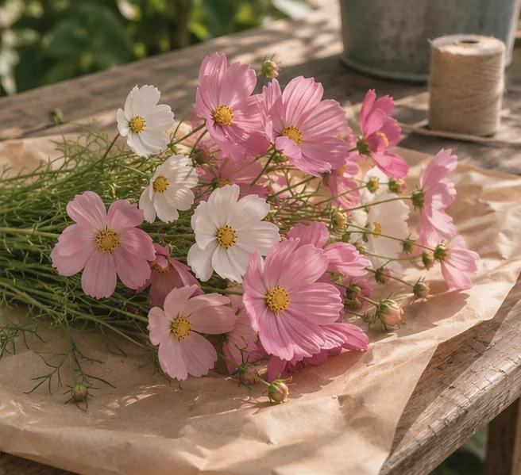
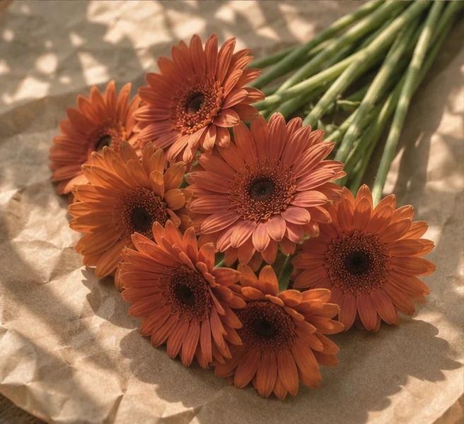
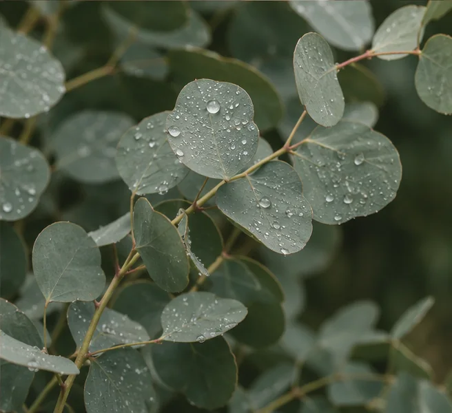

10 cành · 40–55 cm
Sao nhái hồng
Cành rỗng và nhẹ, hợp bình cổ hẹp hoặc cắm lỏng xen cành lá. Cắt lại gốc bằng kéo sắc và cắm nước nông.
95.000 ₫ · chọn bóGiá theo bó để tự cắm. Độ dài là khoảng minh họa của cành sau sơ chế.

10 cành · 40–55 cm
Cành rỗng và nhẹ, hợp bình cổ hẹp hoặc cắm lỏng xen cành lá. Cắt lại gốc bằng kéo sắc và cắm nước nông.
95.000 ₫ · chọn bó
8 cành · 35–45 cm
Đầu hoa lớn, nên để miệng bình đỡ cuống ở nửa chiều cao. Thay nước hằng ngày và tránh một lớp nước quá sâu.
135.000 ₫ · chọn bó
6 cành · 45–60 cm
Tán lá thoáng, dùng làm nền hoặc cắm riêng trong bình gốm. Bỏ phần lá chìm dưới nước. Cành có thể treo ngược để hong khô.
75.000 ₫ · chọn bó